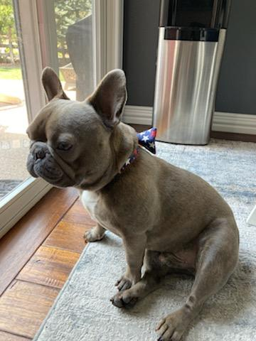

Oscar is a French Bulldog who wears bow ties and enjoys
chasing rabits and squirrels. He is 5 years old now so 35
in dog years.
Even though he has really short legs Oscar can
run super fast if there is food or another dog. He also does
not hesitate to try and size up full grown German Shepherds